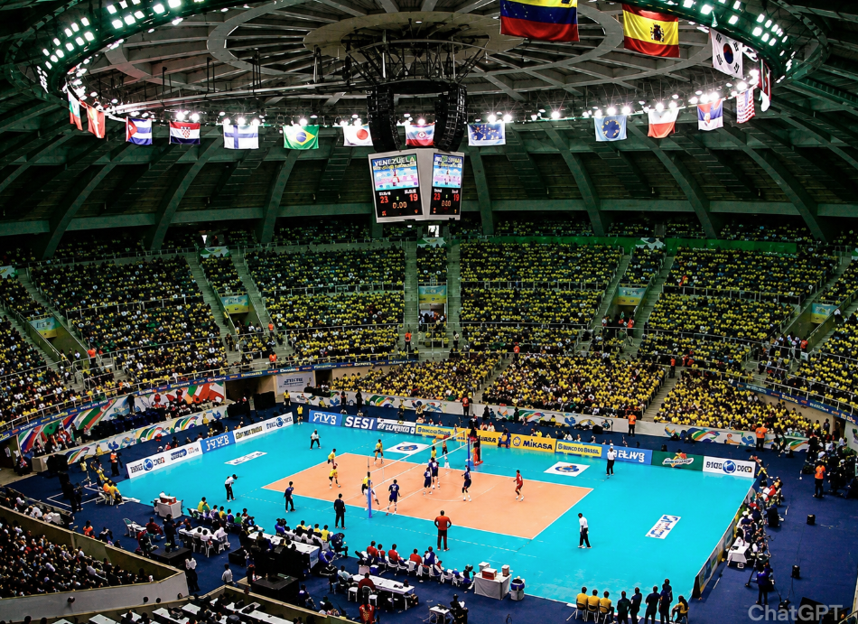
O Voleibol foi criado em 1895, nos Estados Unidos, por William George
Morgan. Ele trabalhava como professor de educação física e queria inventar
um esporte menos cansativo que o basquete, mas que ainda estimulasse o
trabalho em equipe e a atividade física. No início, o esporte recebeu
nome de “Mintonette”. Depois, passou a ser chamado de voleibol porque os
jogadores mantinham a bola no ar através de voleios. Com o tempo, o
esporte se espalhou pelo mundo e se tornou uma das modalidades mais
populares, principalmente em países como o Brasil.
O Voleibol chegou ao Brasil no começo do século XX, por volta de 1915.
O
esporte foi trazido por professores, associações esportivas e instituições
internacionais, como a ACM (Associação Cristã de Moços), que ajudaram a
divulgar a modalidade nas escolas e clubes brasileiros.
Com o passar dos
anos, o Brasil começou a investir mais no voleibol, criando campeonatos
nacionais e formando atletas de alto nível. Esse crescimento levou ao
surgimento de grandes jogadores, como Giba, considerado um dos maiores
nomes da história do esporte.
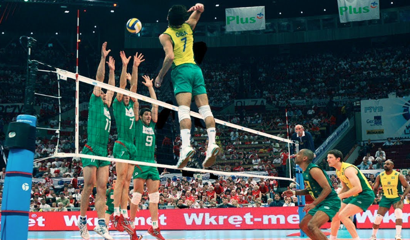
O Voleibol se tornou um dos esportes mais populares do mundo graças a
atletas que marcaram época com técnica, liderança e conquistas históricas.
Entre seleções lendárias, como a do Brasil, vários jogadores ficaram
conhecidos mundialmente por suas habilidades dentro de quadra. 12 maiores
nomes da história do voleibol Giba – Ídolo da seleção brasileira,dono da
famosa frase "giba neles" alem de ganhar tudo que o esporte oferecia
naquela epoca. Serginho – Considerado um dos melhores líberos de todos os
tempos, foi um companheiro dee giba na seleção, se tornou tambem idolo da
seleção e ganhou muito coisa com seleçao e os clubes que jogou.
Bernardinho – Técnico multicampeão que transformou o Brasil em potência
mundial. Karch Kiraly – Um dos maiores jogadores da história, campeão no
vôlei de quadra e de praia. Mireya Luis – Lenda do voleibol feminino,
famosa por sua impulsão impressionante. Lang Ping – Grande estrela da
China como atleta e treinadora. Ivan Zaytsev – Conhecido pela potência no
saque e no ataque. Earvin N'Gapeth – Destaque pela criatividade e
habilidade técnica. Ricardo Garcia – Um dos levantadores mais talentosos
da história brasileira. Sheilla Castro – Bicampeã olímpica e referência no
voleibol feminino. Zhu Ting – Uma das maiores atletas da geração atual.
Renan Dal Zotto – Nome importante tanto como jogador quanto treinador da
seleção brasileira.
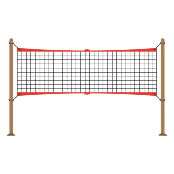
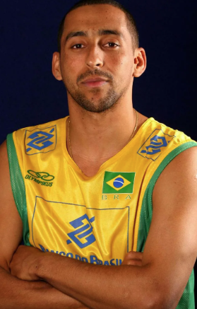
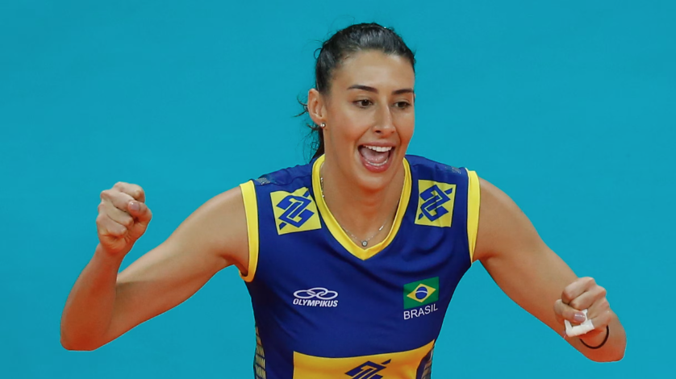
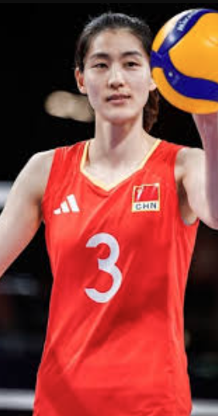
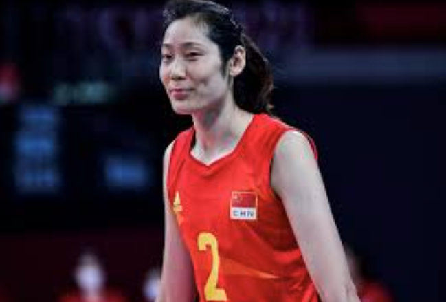
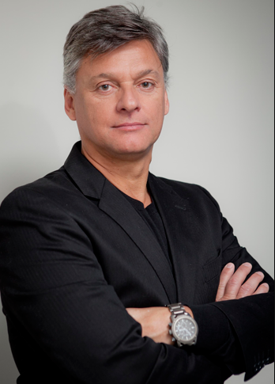
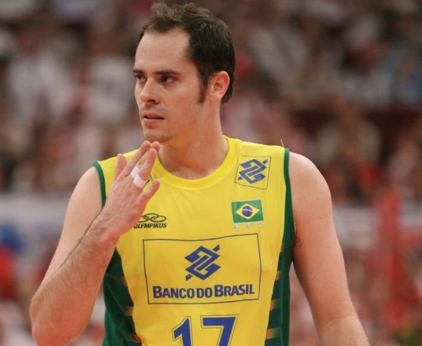
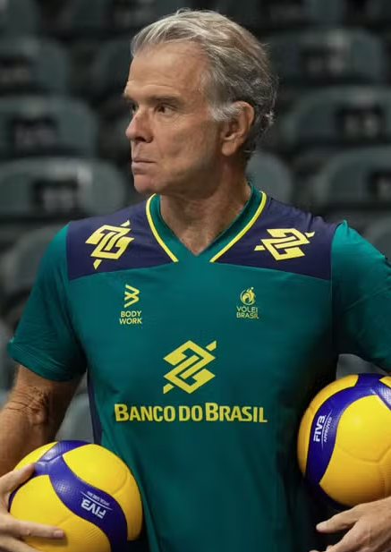
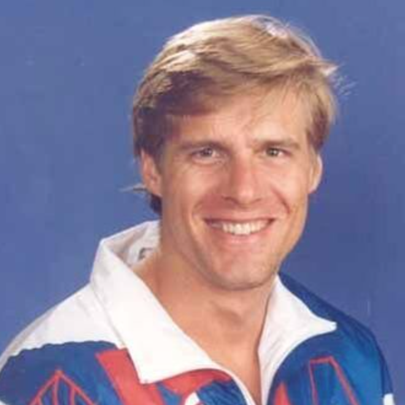
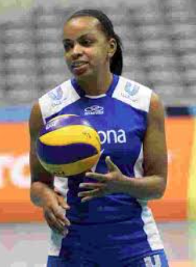
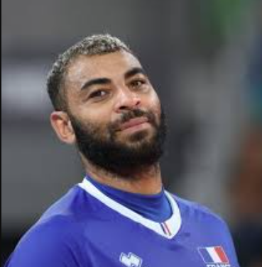
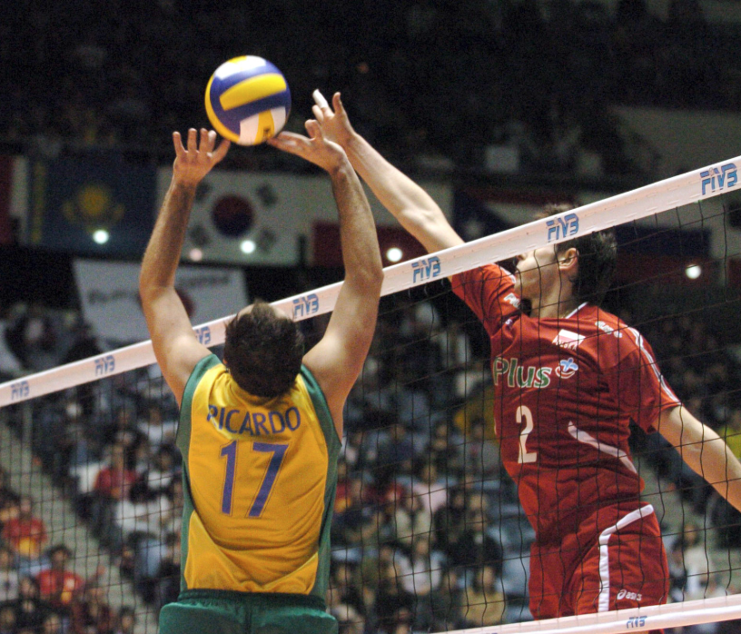
O Voleibol mundial continua sendo um dos esportes mais competitivos e
populares, com campeonatos internacionais que reúnem seleções muito fortes
da Europa, Ásia e América do Sul. Atualmente, o nível técnico do esporte
aumentou bastante, com jogos mais rápidos, atletas mais altos e
estratégias cada vez mais modernas. Entre as seleções masculinas mais
fortes do mundo atualmente estão: Polônia – referência mundial nos últimos
anos, com uma geração muito forte. França – campeã olímpica e conhecida
pela velocidade e criatividade. Itália – tradicional potência do voleibol
mundial. Estados Unidos – equipe equilibrada e muito competitiva. Japão –
seleção que cresceu muito com seu estilo rápido e técnico. Brasil – ainda
é uma das seleções mais respeitadas da história do esporte. No voleibol
feminino, países como Turquia, China, Sérvia, Estados Unidos e o Brasil
também possuem seleções extremamente fortes. O Brasil é considerado uma
das maiores potências da história do voleibol. A seleção brasileira
conquistou títulos olímpicos, mundiais e várias edições da Liga Mundial,
além de revelar jogadores históricos como Giba, Serginho e Sheilla Castro.
Mesmo enfrentando uma renovação de elenco nos últimos anos, o Brasil
continua entre as seleções mais competitivas do mundo, mantendo tradição,
torcida forte e grande influência no cenário internacional do voleibol.
Atualmente, o Voleibol tem uma nova geração muito forte, misturando
atletas experientes com jovens talentos que estão dominando campeonatos
internacionais e olimpíadas. Alguns dos melhores jogadores da atualidade
Bruno Rezende – conhecido como Bruninho, continua sendo um dos
levantadores mais inteligentes e vitoriosos do mundo. Darlan Souza – jovem
destaque do Brasil, famoso pela força no saque e no ataque. Wilfredo León
– considerado um dos atletas mais explosivos do esporte, com ataques
extremamente potentes. Earvin N'Gapeth – destaque da França pela
criatividade e habilidade técnica. Yuji Nishida – um dos símbolos da
velocidade e evolução do voleibol japonês. Tomasz Fornal – peça importante
da poderosa seleção da Polônia. Aleksandar Nikolov – jovem talento europeu
que aparece entre os atletas mais bem avaliados de 2026. Jesús Herrera
Jaime – destaque ofensivo de Cuba e um dos nomes mais fortes atualmente.
Lucão – veterano brasileiro que ainda atua em altíssimo nível e foi eleito
MVP da Superliga 2025/26.
As ligas de vôlei pelo mundo variam muito em nível técnico, investimento, torcida e estilo de jogo. Algumas são famosas por formar atletas, outras por salários altos e nível extremamente competitivo.
# 🇧🇷 Brasil — Superliga Brasileira
Superliga Brasileira de Voleibol
É uma das ligas mais fortes do mundo, principalmente no masculino.
Características:
* jogo muito técnico
* forte formação de atletas
* clubes tradicionais
* grande influência tática
Times conhecidos:
* Sada Cruzeiro
* Vôlei Renata
* SESI
* Minas
O Brasil é referência mundial em:
* defesa
* bloqueio
* organização tática